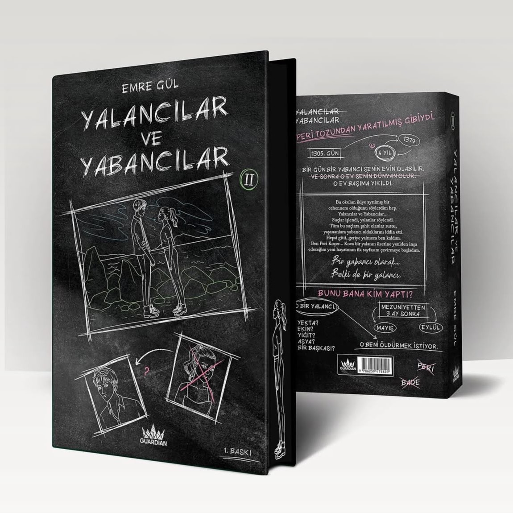

“Bir gün bir yabancı senin evin olabilir. Ve sonra o ev senin dünyan olur. O ev başıma yıkıldı.”
Bu okulun ikiye ayrılmış bir cehennem olduğunu söylerdim hep.
Yalancılar ve Yabancılar… Suçlar işlendi, yalanlar söylendi.
Tüm bu suçlara şahit olanlar sustu, yaşananlara yabancı olduklarını iddia etti.
Hepsi gitti, geriye yalnızca ben kaldım. Ben Peri Koçer… Koca bir yalanın üzerine yeniden inşa edeceğim yeni hayatımın ilk sayfasını çevirmeye başladım.
Bunu bana kim yaptı?